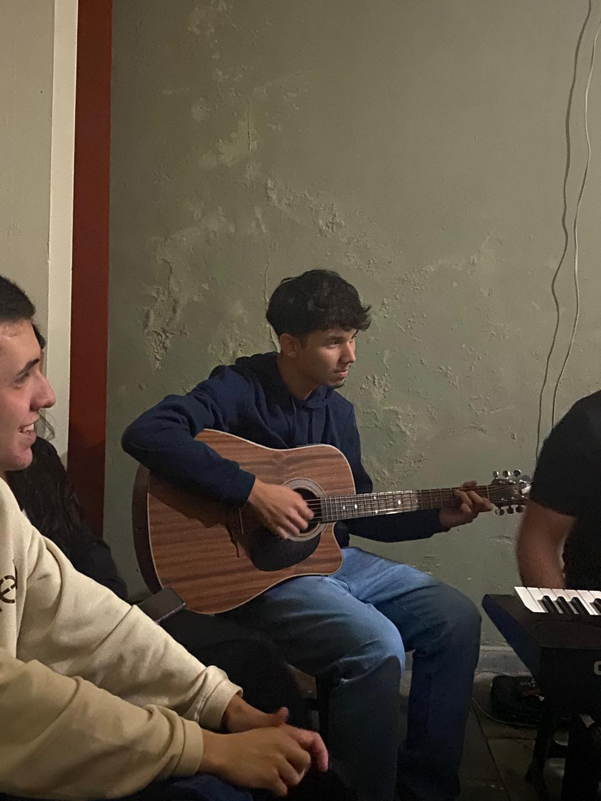
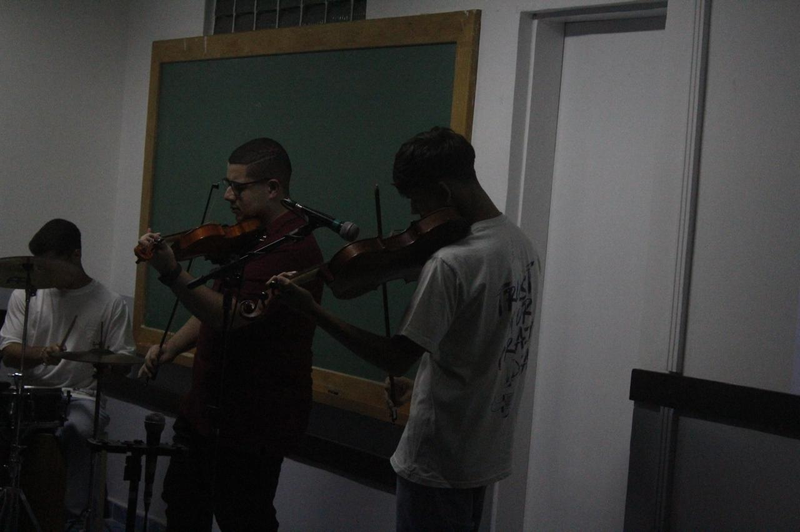

Home
Metas
História
Calculadora
BEM VINDO!
É uma grande alegria ter você aqui! Este espaço foi criado com o propósito de ajudar você a se organizar de forma prática e divertida na sua jornada musical. Por meio de um Trello, você poderá planejar e acompanhar as músicas que deseja aprender, facilitando o processo e tornando tudo mais visual e motivador. Além disso, quero compartilhar um pouco da minha história pessoal e de como a música transformou a minha vida de uma maneira profunda e significativa. Através da música, encontrei não apenas uma forma de expressão, mas também um meio de superação e crescimento. Espero que, ao conhecer um pouco da minha trajetória, você consiga perceber a verdadeira importância da música em nossas vidas e como ela pode nos ajudar a enfrentar desafios e a nos conectar com nós mesmos e com os outros. Para tornar sua jornada ainda mais interessante, você também terá acesso a dashboards que irão ajudá-lo a acompanhar seu progresso. Esses dashboards são uma maneira prática de visualizar seu avanço, estabelecer novas metas e se motivar para alcançar novos objetivos. Meu objetivo é que, ao usar as ferramentas do site, você se divirta, se organize e, principalmente, se inspire a expandir o seu repertório musical. Que a música seja uma fonte constante de prazer, aprendizado e realização para você, assim como tem sido para mim.
Minha História
Olá, meu nome é Felipe Marcos, sou um estudante do curso de ADS na SpTech e alguém que carrega uma verdadeira paixão pela música.
Meu primeiro contato com esse universo foi ainda criança, aos 8 anos, quando comecei a tocar violino. Embora tenha sido importante para o meu começo na música, confesso que nunca cheguei a me aprofundar de fato nesse instrumento.
Com o tempo, fui conhecendo outros Instrumentos, que me abriram diversas portas e foi aí que a conexão verdadeira aconteceu. Descobri que, mais do que uma atividade ou um hobby, a música era uma forma de me expressar quando eu não conseguia colocar em palavras o meu sentimento.
Em momentos em que eu me sentia calado por dentro, foi tocando que consegui falar. Ou melhor, foi através da música que eu encontrei minha voz. Desde então, fui me aprofundando cada vez mais nesse universo, que hoje representa muito mais do que notas ou acordes — representa paz, refúgio e alegria.
Benfícios da Música
Redução de stress
Aumento de conscentração
Melhora da memória
Instrumentos que toco


Uma palinha